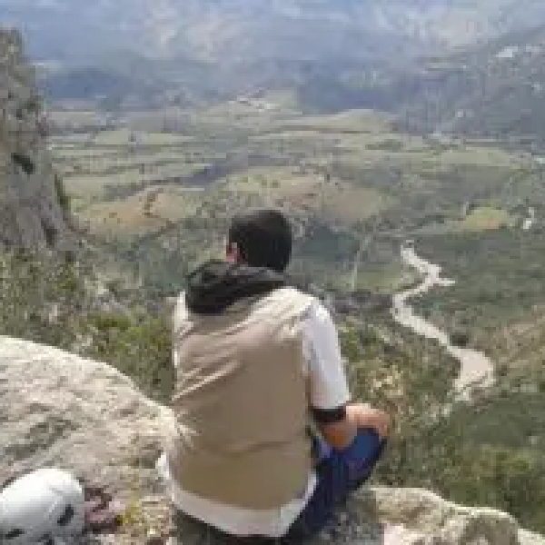

Acceuil
Destination
Conseils de voyage
Evenements
contacte
Acceuil
Destinations
Voyage à Budapest : Histoire, thermes et recoins inoubliables
Articles similaires
Visiter la Martinique: 10 sites incontournables
Que voir au Panama ? Les meilleurs endroits pour un voyage inoubliable

Rencontre avec un globe trotter tunisien : Ahmed Ferchich